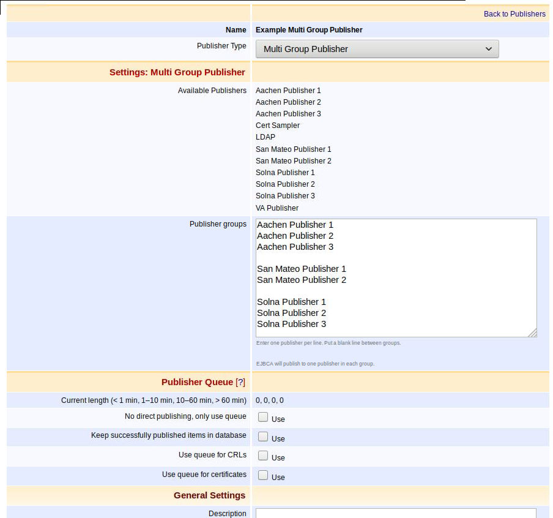
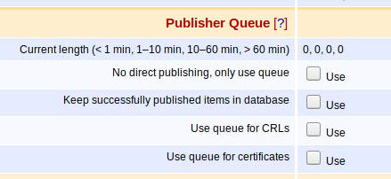
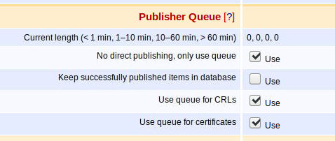

Multi Group Publisher
The Multi Group Publisher allows certificates or certificate status to be published to several groups of publishers. The purpose is both to ease maintenance and to allow for large-scale publishing to EJBCA clusters.
A group is a set of one or more other publishers (may not be other Multi Group Publishers). The Multi Group Publisher ensures that publishing is done according to the following rules:
All groups are published to.
For each group, a randomly selected publisher is published to.
Use Cases
The Multi Group Publisher facilitates administration of large numbers of publishers referenced in multiple certificate profiles and can be used to:
Publish to a large number of publishers: Many groups with one publisher each. Note that this is the common use case.
Publish to one random publisher: One group with many publishers.
Publish to multiple clusters: One group per cluster, with all of the cluster nodes publishers in it.
Settings
The following Multi Group Publisher settings are available.

|
Setting |
Description |
||||||
|
Available Publishers |
Lists available publishers that can be placed in groups in the Multi Group Publisher. To prevent misspelled publisher names, it is recommended to copy-paste from this list. |
||||||
|
Publisher groups |
Free text field used to configure the groups. A group is constructed of one or more publishers. Add one publisher name per line and separate groups by adding a blank line. The example screenshot displays three groups. This type of configuration is useful if there are three clusters in different locations, and you want to publish to one node in each cluster.
The order of groups decide the order they are queued (non-direct publishing) or published (direct publishing). |
Examples
Example 1: Publish to many OCSP responders
Insert each publisher in the Publisher Groups text field, separated by a blank line. In this configuration, each publisher will make up its own group. That way, all of the publishers will be published to.
Aachen Publisher 1Aachen Publisher 2Aachen Publisher 3San Mateo Publisher 1San Mateo Publisher 2Solna Publisher 1Solna Publisher 2Solna Publisher 3Example 2: Very large scale publishing with clusters
Normally, you would not cluster your OCSP responders, but EJBCA allows this configuration for very large scale setups. In this scenario, group the publishers by site.
Aachen Publisher 1Aachen Publisher 2Aachen Publisher 3San Mateo Publisher 1San Mateo Publisher 2Solna Publisher 1Solna Publisher 2Solna Publisher 3Note that EJBCA will choose one publisher in each site at the time of publishing. EJBCA will not automatically migrate queued entries in case of a failing node.
Publisher Queues
It is recommended that the Multi Group Publisher itself does not use the publisher queue and that the publishers in the groups do use the queue. This allows for efficient publishing, asynchronously after a certificate issuance or certificate status change.
The following displays how to configure the Publisher Queue settings for the Multi Group Publisher:

The following displays how to configure the Publisher Queue settings for the publishers included in the groups, enabling asynchronous publishing as described above:

Error handling
EJBCA will queue publishing for each publisher independently. If there is more than one publisher in one or more groups, you will need to take special care, as described in this section.
There is no automated failover of publishers within a group and no automated migration between publisher queues in case of a publisher failure.
If a publisher is down you will have to remove it from the Multi Group Publisher. This can be done by removing the line from the Multi Group Publisher and saving.
If there is data in the queue for the failing publisher, that cannot wait until the publisher becomes available, it can be migrated by accessing the database directly. The publisher is controlled by the publisherId column in the PublisherQueueData table in the database. Note that one should never migrate between queue from publishers of a different type.
Publishing of Revoked Certificates Only
In high-volume environments, it can be useful to publish only revoked certificates. This is configured for all the publishers included in each group, by enabling the Publish only revoked certificates setting. Note that either all or none of the publishers in a group should have the setting Publish only revoked certificates enabled since EJBCA checks the publisher with the lowest ID in the group to determine the value.
If all of the groups have the setting Publish only revoked certificates set for its publishers, the Multi Group Publisher will ignore any non-revoked certificates.